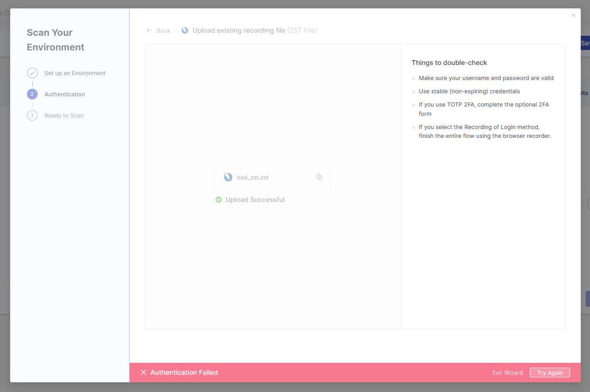
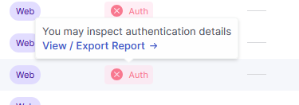
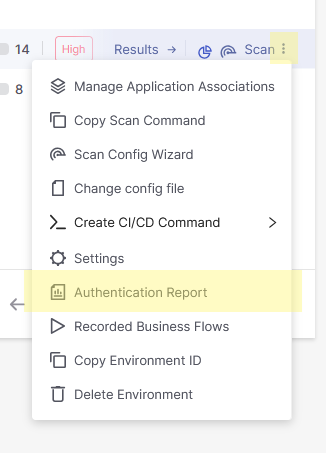
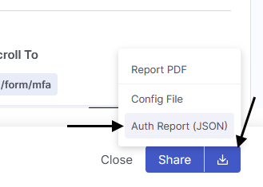

This is a client-side JSON auth report parser for Checkmarx's DAST in CxOne. Uploading the file will not upload it to a server.
This is not an AI-based tool.
For questions or concerns, please refer to the repository or email gabriel.nieves@checkmarx.com.
Start by uploading a file at the top-right.
Where do I get a JSON auth report file?
To get a JSON auth report file, you will need access to a Checkmarx CxOne tenant with the DAST engine enabled.
If you don't have an auth report but want to test the tool, click here to download a sample auth report
-
Use the onboarding wizard in the "Environments" section of CxOne to create the environment. Once you have either succeeded or encountered an authentication failure, you will be able to download an authentication report file. JSON-formatted reports can only be downloaded upon authentication failures.

-
Open the authentication report panel by either using the tooltip or the dropdown.
Via tooltip: Open the authentication report panel by hovering over the Auth tooltip with the red X, then clicking "View / Export Report"
Via dropdown: Open the authentication report panel by clicking the three dots to configure the environment, then clicking Authentication Report
-
Click on the arrow at the bottom-right of the Authentication Report panel, then click "Auth Report (JSON)"
